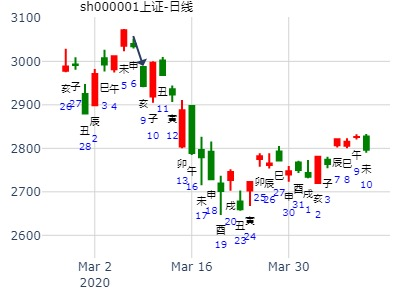
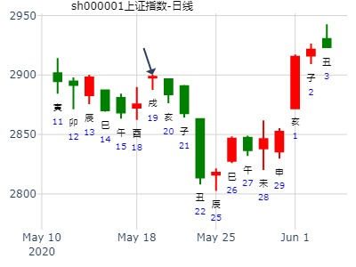

沈阳宫女士问在山东的水产养殖生意？剥之艮。
庚辰月 丙午日
时间：辰月 丙午日
神煞：华盖-戌 将星-午 劫煞-亥 天医-卯 天禧-戌 桃花-卯 谋星-辰
禄神-己 羊刃-午 文昌-申 马星-申 灾煞-子 贵人-亥、酉
辰月 丙午日（旬空：寅卯）
六神 藏爻 山地剥 乾宫 艮为山 艮宫
青龙 父母戌土■■■■■■妻财寅木 妻财寅木■■■■■■
玄武 兄弟申金■■ ■■子孙子水 世 子孙子水■■ ■■
白虎 官鬼午火■■ ■■父母戌土 父母戌土■■ ■■
腾蛇 父母辰土■■ ■■妻财卯木 ×→ 兄弟申金■■■■■■
勾陈 妻财寅木■■ ■■官鬼巳火 应 官鬼午火■■ ■■
朱雀 子孙子水■■ ■■父母未土 父母辰土■■ ■■
搞水产天气最重要，旱，水量不足，涝，水产易被冲走。
以子孙爻为用神。
子孙持世，被月克日冲，又没有动爻生，被冲破了。
冲世爻的是官鬼，一是灾害，水产品要生病；二是火爻，主旱灾。
再看财爻，休因旬空又化申兄回头克，破财无疑。
再看应爻，临勾陈巳官，官司麻烦之象。
剥： 剥落之象。 艮为止：长久不了。
身体不强，心脏有病，肾也弱，有耳鸣浮肿之象，极腰也不好。
一年后，汇报情况：
赔得很惨，因大旱，政府为保农田，在他的养殖塘抽水灌溉，官女士与其理论也无法阻止，结果，就一个墉里还有点水，周围 的地赖还时常来偷鱼虾，仅能养的一点鱼虾还闹毛病，又死了不少。
真是“屋漏偏逢连夜雨”。
王注：
旬空的财爻照样要被克，不会避克。
出空就被克。
主帖标题: 1.15上证
公历起卦时间：2020年1月15日9时22分 (手工指定)
干支：己亥年 丁丑月 丁巳日 乙巳时 （日空：子丑）
神煞：驿马－亥 桃花－午 日禄－午 贵人－酉，亥
乾宫：山地剥 艮宫：艮为山 (六冲)
六神 伏神 本 卦 变 卦
青龙 妻财丙寅木 ▅▅▅▅▅ 妻财丙寅木 ▅▅▅▅▅ 世
玄武 兄弟壬申金 子孙丙子水 ▅▅ ▅▅ 世 子孙丙子水 ▅▅ ▅▅
白虎 父母丙戌土 ▅▅ ▅▅ 父母丙戌土 ▅▅ ▅▅
腾蛇 妻财乙卯木 ▅▅ ▅▅ ╳→ 兄弟丙申金 ▅▅▅▅▅ 应
勾陈 官鬼乙巳火 ▅▅ ▅▅ 应 官鬼丙午火 ▅▅ ▅▅
朱雀 父母乙未土 ▅▅ ▅▅ 父母丙辰土 ▅▅ ▅▅
六三：剥之，无咎。象曰：剥之无咎，失上下也。□ ＝ 爿 ＋ 木
占事：002151 近期走势
起卦方式：手工指定 易经股市论坛 www.yijingstock.com 在线排盘系统
公历时间：2013年2月17日13时40分
干 支：癸巳年 甲寅月 甲寅日 辛未时 (子丑)
乾宫：山地剥 艮宫：艮为山（六冲）
六神 伏 神 【本 卦】 【变 卦】
玄武 ▄▄▄▄▄ 妻财丙寅木 ▄▄▄▄▄ 妻财丙寅木 世
白虎 兄弟壬申金 ▄▄ ▄▄ 子孙丙子水 世 ▄▄ ▄▄ 子孙丙子水
螣蛇 ▄▄ ▄▄ 父母丙戌土 ▄▄ ▄▄ 父母丙戌土
勾陈 ▄▄ ▄▄ 妻财乙卯木 X-> ▄▄▄▄▄ 兄弟丙申金 应
朱雀 ▄▄ ▄▄ 官鬼乙巳火 应 ▄▄ ▄▄ 官鬼丙午火
青龙 ▄▄ ▄▄ 父母乙未土 ▄▄ ▄▄ 父母丙辰土
六三：剥之，无咎。
象曰：剥之无咎，失上下也。
北斗星通经过多个交易日横盘后在今日午盘后拉起，财动逢值，今日正是上涨应期。
按爻辞“剥之，无咎。”短线适当高抛。
主帖标题: [原创]2007年3月27日上海大盘走势预测/更新/
公历时间：2007年3月24日21时37分 星期六
农历时间：丁亥年二月初六亥时
干支：丁亥年 癸卯月 丁巳日 辛亥时 (旬空：子丑)
神煞：驿马—亥 桃花—午 日禄—午 贵人—酉，亥
乾宫：山地剥 艮宫：艮为山（六冲）
六神 伏 神 【本 卦】 【变 卦】
青龙 ▅▅▅▅▅ 妻财丙寅木 ▅▅▅▅▅ 妻财丙寅木 世
玄武 兄弟壬申金 ▅▅ ▅▅ 子孙丙子水 世 ▅▅ ▅▅ 子孙丙子水
白虎 ▅▅ ▅▅ 父母丙戌土 ▅▅ ▅▅ 父母丙戌土
螣蛇 ▅▅ ▅▅ 妻财乙卯木 ×→ ▅▅▅▅▅ 兄弟丙申金 应
勾陈 ▅▅ ▅▅ 官鬼乙巳火 应 ▅▅ ▅▅ 官鬼丙午火
朱雀 ▅▅ ▅▅ 父母乙未土 ▅▅ ▅▅ 父母丙辰土
预测周二情况;正化周二之申金回头克制;下跌波段中,最大幅度70--80点;有横盘现象;下跌不会少于50点;

主帖标题: 天字号系列之三-----2013黑马股
序-----继2012年1月5日推出稀土龙头【包钢稀土】，从1月6日的34.80元价位，至5月2日达到77.96元；再续【天字号系列】----天津磁卡、天业股份；之后2013年又一个----【天宸股份】。
昨日大盘继续调整，但不乏绿草丛中一点红，逆势翻红的个股也屡见不鲜，天宸股份就是其中的一个。打开K线图，图形完美，看看消息；随着起了一个电脑梅花卦，【预测天宸股份明天的走势如何?】
纳甲六爻在线排盘
婚否： 出生年:1981 性别：男 占事：起卦方式：手动摇卦 六爻排盘
公历时间：2013年3月13日16时1分
干 支：癸巳年 乙卯月 戊寅日 庚申时
旬 空：午未 子丑 申酉 子丑
神 煞：驿马─申 桃花─卯 日禄─巳 贵人─丑，未
乾宫：山地剥 艮宫：艮为山（六冲）
六神 伏 神 【本 卦】 【变 卦】
朱雀 ▄▄▄▄▄ 妻财丙寅木 ▄▄▄▄▄ 妻财丙寅木 世
青龙 兄弟壬申金 ▄▄ ▄▄ 子孙丙子水 世 ▄▄ ▄▄ 子孙丙子水
玄武 ▄▄ ▄▄ 父母丙戌土 ▄▄ ▄▄ 父母丙戌土
白虎 ▄▄ ▄▄ 妻财乙卯木 × ▄▄▄▄▄ 兄弟丙申金 应
螣蛇 ▄▄ ▄▄ 官鬼乙巳火 应 ▄▄ ▄▄ 官鬼丙午火
勾陈 ▄▄ ▄▄ 父母乙未土 ▄▄ ▄▄ 父母丙辰土
断；财卯日月临旺，卯化申兄弟劫财，但卯财旺，申兄弟空亡绝与日建，无力劫财；
符合今日戊寅以涨停板报收。
明日己卯日，临财日，空申兄弟同样胎死于卯日月；但不一定涨停板。
今天上午冲击至涨停板，截止到现在发稿时，该股现价是4.97元，涨幅为百分之7.58；
收盘时再看看。
【股市有风险，投资须谨慎】
半年卦：股市半年内是涨还是跌还是关闭？
剥之艮。值月旬空暗动。值月暗动旬空。.md
公历起卦时间：2020年3月7日13时31分 (在线摇卦)
干支：庚子年 己卯月 己酉日 辛未时 （日空：寅卯）
神煞：驿马－亥 桃花－午 日禄－午 贵人－子，申
乾宫：山地剥 艮宫：艮为山 (六冲)
六神 伏神 本 卦 变 卦
勾陈 妻财丙寅木 ▅▅▅▅▅ 妻财丙寅木 ▅▅▅▅▅ 世
朱雀 兄弟壬申金 子孙丙子水 ▅▅ ▅▅ 世 子孙丙子水 ▅▅ ▅▅
青龙 父母丙戌土 ▅▅ ▅▅ 父母丙戌土 ▅▅ ▅▅
玄武 妻财乙卯木 ▅▅ ▅▅ ╳→ 兄弟丙申金 ▅▅▅▅▅ 应
白虎 官鬼乙巳火 ▅▅ ▅▅ 应 官鬼丙午火 ▅▅ ▅▅
螣蛇 父母乙未土 ▅▅ ▅▅ 父母丙辰土 ▅▅ ▅▅
值月又旬空暗动，当月就开跌。
值月旺，代表高点。
旬空被暗动冲实，立马受克。（相当出空即受克）


主帖标题: 试测上证2021.3.1戊申一-3.15壬戌一哪日顶？
出生：2021 年 性别：男 占事：没填
公历起卦时间：2021年3月6日13时54分 (电脑自动)
干支：辛丑年 辛卯月 癸丑日 己未时 （日空：寅卯）
神煞：驿马－亥 桃花－午 日禄－子 贵人－卯，巳
乾宫：山地剥 艮宫：艮为山 (六冲)
六神 伏神 本 卦 变 卦
白虎 妻财丙寅木 ▅▅▅▅▅ 妻财丙寅木 ▅▅▅▅▅ 世
螣蛇 兄弟壬申金 子孙丙子水 ▅▅ ▅▅ 世 子孙丙子水 ▅▅ ▅▅
勾陈 父母丙戌土 ▅▅ ▅▅ 父母丙戌土 ▅▅ ▅▅
朱雀 妻财乙卯木 ▅▅ ▅▅ ╳→ 兄弟丙申金 ▅▅▅▅▅ 应
青龙 官鬼乙巳火 ▅▅ ▅▅ 应 官鬼丙午火 ▅▅ ▅▅
玄武 父母乙未土 ▅▅ ▅▅ 父母丙辰土 ▅▅ ▅▅

起卦时间：2012年04月02日12时38分
起卦农历：壬辰年三月十二日午时
惊蛰：2012年03月05日12时28分 中华预测网
清明：2012年04月04日17时16分 http://www.zhycw.com
神煞：天乙—卯巳 福星—辰 日禄—子 羊刃—亥 驿马—亥 桃花—午 华盖—丑
干支：壬辰年 癸卯月 癸巳日 戊午时
旬空：午未 辰巳 午未 子丑
六神 伏神 乾宫：山地剥 艮宫：艮为山（六冲）
【本 卦】 【变 卦】
白虎 ▅▅▅▅▅ 妻财丙寅木 ▅▅▅▅▅ 妻财丙寅木 世
滕蛇 兄弟壬申金 ▅▅ ▅▅ 子孙丙子水 世 ▅▅ ▅▅ 子孙丙子水
勾陈 ▅▅ ▅▅ 父母丙戌土 ▅▅ ▅▅ 父母丙戌土
朱雀 ▅▅ ▅▅ 妻财乙卯木 ×→ ▅▅▅▅▅ 兄弟丙申金 应
青龙 ▅▅ ▅▅ 官鬼乙巳火 应 ▅▅ ▅▅ 官鬼丙午火
玄武 ▅▅ ▅▅ 父母乙未土 ▅▅ ▅▅ 父母丙辰土
主帖标题: 几个股票下周涨跌
生：没填 年 性别：男 占事：300028金亚科技下周涨跌
公历起卦时间：2016年4月22日16时25分 (电脑自动)
干支：丙申年 壬辰月 甲戌日 壬申时 （日空：申酉）
乾宫：山地剥 艮宫：艮为山 (六冲)
六神 伏神 本 卦 变 卦
玄武 妻财丙寅木 ▅▅▅▅▅ 妻财丙寅木 ▅▅▅▅▅ 世
白虎 兄弟壬申金 子孙丙子水 ▅▅ ▅▅ 世 子孙丙子水 ▅▅ ▅▅
腾蛇 父母丙戌土 ▅▅ ▅▅ 父母丙戌土 ▅▅ ▅▅
勾陈 妻财乙卯木 ▅▅ ▅▅ ╳→ 兄弟丙申金 ▅▅▅▅▅ 应
朱雀 官鬼乙巳火 ▅▅ ▅▅ 应 官鬼丙午火 ▅▅ ▅▅
青龙 父母乙未土 ▅▅ ▅▅ 父母丙辰土 ▅▅ ▅▅
寅日冲实申，反而跌。卯日值日，也是跌。
剥：不利有攸往。彖曰：剥，剥也，柔变刚也。 不利有攸往，小人长也。 顺而止之
主帖标题: 2020.05.19日上证指数擂台赛第十八场第2局Z方（日测）
replyreload += ',' + 12935361;数理卦
公历起卦时间：2020年5月19日6时19分 (手工指定)
干支：庚子年 辛巳月 壬戌日 癸卯时 （日空：子丑）
神煞：驿马－申 桃花－卯 日禄－亥 贵人－卯，巳
乾宫：山地剥 艮宫：艮为山 (六冲)
六神 伏神 本 卦 变 卦
白虎 妻财丙寅木 ▅▅▅▅▅ 妻财丙寅木 ▅▅▅▅▅ 世
螣蛇 兄弟壬申金 子孙丙子水 ▅▅ ▅▅ 世 子孙丙子水 ▅▅ ▅▅
勾陈 父母丙戌土 ▅▅ ▅▅ 父母丙戌土 ▅▅ ▅▅
朱雀 妻财乙卯木 ▅▅ ▅▅ ╳→ 兄弟丙申金 ▅▅▅▅▅ 应
青龙 官鬼乙巳火 ▅▅ ▅▅ 应 官鬼丙午火 ▅▅ ▅▅
玄武 父母乙未土 ▅▅ ▅▅ 父母丙辰土 ▅▅ ▅▅
六三：剥之，无咎。象曰：剥之无咎，失上下也。
前一天酉冲飞卯，跌。今天合卯，涨。

主帖标题: 5月10至5月14日大盘预测
公历时间：2021年5月9日21时30分
干 支：辛丑年 癸巳月 丁巳日 辛亥时
旬 空：辰巳 午未 子丑 寅卯
神 煞：驿马─亥 桃花─午 日禄─午 贵人─酉，亥
乾宫：山地剥 艮宫：艮为山（六冲）
六神 伏 神 【本 卦】 【变 卦】
青龙 ▄▄▄▄▄ 妻财丙寅木 ▄▄▄▄▄ 妻财丙寅木 世
玄武 兄弟壬申金 ▄▄ ▄▄ 子孙丙子水 世 ▄▄ ▄▄ 子孙丙子水
白虎 ▄▄ ▄▄ 父母丙戌土 ▄▄ ▄▄ 父母丙戌土
螣蛇 ▄▄ ▄▄ 妻财乙卯木 × ▄▄▄▄▄ 兄弟丙申金 应
勾陈 ▄▄ ▄▄ 官鬼乙巳火 应 ▄▄ ▄▄ 官鬼丙午火
朱雀 ▄▄ ▄▄ 父母乙未土 ▄▄ ▄▄ 父母丙辰土
特殊日月，巳月巳日合绊兄弟。结果未日申日却是涨。酉日冲飞卯木，跌，戌日合卯木，涨。丑日墓兄弟，涨。
占事：恒邦股份未来四个月走势
时间: 2016-06-13 11时40分
干支: 丙申年甲午月丙寅日 (旬空: 戌亥 )
山地剥 艮为山
六神 伏神 本 卦 变 卦
青龙 ▅▅▅▅▅ 妻财寅木 ▅▅▅▅▅ 妻财寅木 世
玄武 兄弟申金▅▅ ▅▅ 子孙子水 世 ▅▅ ▅▅ 子孙子水
白虎 ▅▅ ▅▅ 父母戌土 ▅▅ ▅▅ 父母戌土
腾蛇 ▅▅ ▅▅ 妻财卯木 Ｘ→ ▅▅▅▅▅ 兄弟申金 应
勾陈 ▅▅ ▅▅ 官鬼巳火 应 ▅▅ ▅▅ 官鬼午火
朱雀 ▅▅ ▅▅ 父母未土 ▅▅ ▅▅ 父母辰土
六三：剥之，无咎。
测600831广电网络在2020年下半年走势
公历起卦时间：2020年6月25日10时12分 (手工指定)
干支：庚子年 壬午月 己亥日 己巳时 （日空：辰巳）
神煞：驿马－巳 桃花－子 日禄－午 贵人－子，申
乾宫：山地剥 艮宫：艮为山 (六冲)
六神 伏神 本 卦 变 卦
勾陈 妻财丙寅木 ▅▅▅▅▅ 妻财丙寅木 ▅▅▅▅▅ 世
朱雀 兄弟壬申金 子孙丙子水 ▅▅ ▅▅ 世 子孙丙子水 ▅▅ ▅▅
青龙 父母丙戌土 ▅▅ ▅▅ 父母丙戌土 ▅▅ ▅▅
玄武 妻财乙卯木 ▅▅ ▅▅ ╳→ 兄弟丙申金 ▅▅▅▅▅ 应
白虎 官鬼乙巳火 ▅▅ ▅▅ 应 官鬼丙午火 ▅▅ ▅▅
螣蛇 父母乙未土 ▅▅ ▅▅ 父母丙辰土 ▅▅ ▅▅
整体是跌。但是申月还能涨，意外？
剥之艮，大盘到下周末。经典暴跌申日.md
时间: 2020-07-16 11时42分
干支: 庚子年癸未月庚申日壬午时 (旬空: 子丑 )
山地剥 艮为山
六神 伏神 本 卦 变 卦
腾蛇 ▅▅▅▅▅ 妻财寅木 ▅▅▅▅▅ 妻财寅木 世
勾陈 兄弟申金▅▅ ▅▅ 子孙子水 世 ▅▅ ▅▅ 子孙子水
朱雀 ▅▅ ▅▅ 父母戌土 ▅▅ ▅▅ 父母戌土
青龙 ▅▅ ▅▅ 妻财卯木 Ｘ→ ▅▅▅▅▅ 兄弟申金 应
玄武 ▅▅ ▅▅ 官鬼巳火 应 ▅▅ ▅▅ 官鬼午火
白虎 ▅▅ ▅▅ 父母未土 ▅▅ ▅▅ 父母辰土
六三：剥之，无咎。
剥之艮，财化兄回头克，当时旬空周末完就不空。占事：焦煤1501 811 -815
公历时间：2014年8月10日20时33分
干 支：甲午年 壬申月 癸丑日 壬戌时 （寅卯空）
乾宫：山地剥 艮宫：艮为山（六冲）
六神 伏 神 【本 卦】 【变 卦】
白虎 ▄▄▄▄▄ 妻财丙寅木 ▄▄▄▄▄ 妻财丙寅木 世
螣蛇 兄弟壬申金 ▄▄ ▄▄ 子孙丙子水 世 ▄▄ ▄▄ 子孙丙子水
勾陈 ▄▄ ▄▄ 父母丙戌土 ▄▄ ▄▄ 父母丙戌土
朱雀 ▄▄ ▄▄ 妻财乙卯木 X-> ▄▄▄▄▄ 兄弟丙申金 应
青龙 ▄▄ ▄▄ 官鬼乙巳火 应 ▄▄ ▄▄ 官鬼丙午火
玄武 ▄▄ ▄▄ 父母乙未土 ▄▄ ▄▄ 父母丙辰土
动态旬空的强大作用。
寅卯本是空，但周一一出空就受克。跌。
到了午日仍是冲实子水，也冲了子水旺暗动大涨。
主帖标题: 8.30——涨势可期
起卦公历：2022年8月29日13时0分(北京时间)
起卦农历：二○二二年 八月 初三日 未时。
干支： 壬寅年 戊申月 甲寅日 辛未时 (卦身：卯)
主变卦 山地剥(乾宫) 之 艮为山(艮宫) [空亡:子、丑]
玄武 ━━━ 妻财丙寅木 ━━━ 妻财丙寅木 世
白虎 兄申 ━ ━ 子孙丙子水 世 ━ ━ 子孙丙子水
螣蛇 ━ ━ 父母丙戌土 ━ ━ 父母丙戌土
勾陈 ━ ━× 妻财乙卯木 ━━━ 兄弟丙申金 应
朱雀 ━ ━ 官鬼乙巳火 应 ━ ━ 官鬼丙午火
青龙 ━ ━ 父母乙未土 ━ ━ 父母丙辰土
◇六三:剥之，无咎。 象曰：剥之无咎，失上下也。
剥空头之势，显涨势之态。
占事：600531明天及下周涨跌如何？
起卦方式：手动摇卦 易经股市论坛 www.yijingstock.com 在线排盘系统
公历时间：2014年9月18日17时8分
干 支：甲午年 癸酉月 壬辰日 己酉时
旬 空：辰巳 戌亥 (午未) 寅卯
乾宫：山地剥 艮宫：艮为山（六冲）
六神 伏 神 【本 卦】 【变 卦】
白虎 ▄▄▄▄▄ 妻财丙寅木 ▄▄▄▄▄ 妻财丙寅木 世
螣蛇 兄弟壬申金 ▄▄ ▄▄ 子孙丙子水 世 ▄▄ ▄▄ 子孙丙子水
勾陈 ▄▄ ▄▄ 父母丙戌土 ▄▄ ▄▄ 父母丙戌土
朱雀 ▄▄ ▄▄ 妻财乙卯木 X-> ▄▄▄▄▄ 兄弟丙申金 应
青龙 ▄▄ ▄▄ 官鬼乙巳火 应 ▄▄ ▄▄ 官鬼丙午火
玄武 ▄▄ ▄▄ 父母乙未土 ▄▄ ▄▄ 父母丙辰土
巳日合兄弟申金，仍是跌(看来此处变爻逢合不是关键）
亥日跌，莫非动态旬空巳火被冲实？
而子水世爻绝于日，更重要。
主帖标题: 什么时候股票能尽量回本？
出生：2019 年 性别：男 占事：没填
公历起卦时间：2019年10月30日21时1分 (手工指定)
干支：己亥年 甲戌月 庚子日 丁亥时 （日空：辰巳）
神煞：驿马－寅 桃花－酉 日禄－申 贵人－丑，未
乾宫：山地剥 艮宫：艮为山 (六冲)
六神 伏神 本 卦 变 卦
腾蛇 妻财丙寅木 ▅▅▅▅▅ 妻财丙寅木 ▅▅▅▅▅ 世
勾陈 兄弟壬申金 子孙丙子水 ▅▅ ▅▅ 世 子孙丙子水 ▅▅ ▅▅
朱雀 父母丙戌土 ▅▅ ▅▅ 父母丙戌土 ▅▅ ▅▅
青龙 妻财乙卯木 ▅▅ ▅▅ ╳→ 兄弟丙申金 ▅▅▅▅▅ 应
玄武 官鬼乙巳火 ▅▅ ▅▅ 应 官鬼丙午火 ▅▅ ▅▅
白虎 父母乙未土 ▅▅ ▅▅ 父母丙辰土 ▅▅ ▅▅
主帖标题: 11.29大盘
公历起卦时间：2019年11月29日9时50分 (手工指定)
干支：己亥年 乙亥月 庚午日 辛巳时 （日空：戌亥）
神煞：驿马－申 桃花－卯 日禄－申 贵人－丑，未
乾宫：山地剥 艮宫：艮为山 (六冲)
六神 伏神 本 卦 变 卦
腾蛇 妻财丙寅木 ▅▅▅▅▅ 妻财丙寅木 ▅▅▅▅▅ 世
勾陈 兄弟壬申金 子孙丙子水 ▅▅ ▅▅ 世 子孙丙子水 ▅▅ ▅▅
朱雀 父母丙戌土 ▅▅ ▅▅ 父母丙戌土 ▅▅ ▅▅
青龙 妻财乙卯木 ▅▅ ▅▅ ╳→ 兄弟丙申金 ▅▅▅▅▅ 应
玄武 官鬼乙巳火 ▅▅ ▅▅ 应 官鬼丙午火 ▅▅ ▅▅
白虎 父母乙未土 ▅▅ ▅▅ 父母丙辰土 ▅▅ ▅▅
六三：剥之，无咎。象曰：剥之无咎，失上下也。□ ＝ 爿 ＋ 木
动化回头克，大盘收阴
出生：2020 年 性别：男
占事：上证11.27甲戌五-12.1二戊寅哪日顶ganwx？
公历起卦时间：2020年11月30日9时15分 (电脑自动)
干支：庚子年 丁亥月 丁丑日 乙巳时 （日空：申酉）
乾宫：山地剥 艮宫：艮为山 (六冲)
六神 伏神 本 卦 变 卦
青龙 妻财丙寅木 ▅▅▅▅▅ 妻财丙寅木 ▅▅▅▅▅ 世
玄武 兄弟壬申金 子孙丙子水 ▅▅ ▅▅ 世 子孙丙子水 ▅▅ ▅▅
白虎 父母丙戌土 ▅▅ ▅▅ 父母丙戌土 ▅▅ ▅▅
螣蛇 妻财乙卯木 ▅▅ ▅▅ ╳→ 兄弟丙申金 ▅▅▅▅▅ 应
勾陈 官鬼乙巳火 ▅▅ ▅▅ 应 官鬼丙午火 ▅▅ ▅▅
朱雀 父母乙未土 ▅▅ ▅▅ 父母丙辰土 ▅▅ ▅▅
guam yao
寅日冲飞申金，而非冲实。（弱就冲飞）

琴十一 发表于 2021-11-2 13:08
你报三个数。
公历时间：2021年11月2日14时55分 农历时间：辛丑年 九月二十八日未时
干 支：辛丑年 戊戌月 甲寅日 辛未时
旬 空：辰巳 辰巳 子丑 戌亥
神 煞：驿马─申 桃花─卯 日禄─寅 贵人─丑，未
中国预测网纳甲六爻排盘
乾宫：山地剥 艮宫：艮为山（六冲）
六神 伏 神 【本 卦】 【变 卦】
玄武 ▄▄▄▄▄ 妻财丙寅木 ▄▄▄▄▄ 妻财丙寅木 世
白虎 兄弟壬申金 ▄▄ ▄▄ 子孙丙子水 世 ▄▄ ▄▄ 子孙丙子水
螣蛇 ▄▄ ▄▄ 父母丙戌土 ▄▄ ▄▄ 父母丙戌土
勾陈 ▄▄ ▄▄ 妻财乙卯木 × ▄▄▄▄▄ 兄弟丙申金 应
朱雀 ▄▄ ▄▄ 官鬼乙巳火 应 ▄▄ ▄▄ 官鬼丙午火
青龙 ▄▄ ▄▄ 父母乙未土 ▄▄ ▄▄ 父母丙辰土
求测人：某人，男，庚申(1980年)，自动起卦(起卦方式)
占问事宜：测2016.12.16星期五-12.23星期五上证哪日是顶
公历：2016年12月18日16时28分，星期日。
干支：丙申年 庚子月 甲戌日 壬申时 [空亡:申、酉] (卦身：辰)
主变卦 山地剥(乾宫) 之 艮为山(艮宫)
玄武 ▅▅▅▅▅ 妻财丙寅木 ▅▅▅▅▅ 妻财丙寅木 世
白虎 兄弟壬申金 ▅▅ ▅▅ 子孙丙子水 世 ▅▅ ▅▅ 子孙丙子水
螣蛇 ▅▅ ▅▅ 父母丙戌土 ▅▅ ▅▅ 父母丙戌土
勾陈 ▅▅ ▅▅×妻财乙卯木 ▅▅▅▅▅ 兄弟丙申金 应
朱雀 ▅▅ ▅▅ 官鬼乙巳火 应 ▅▅ ▅▅ 官鬼丙午火
青龙 ▅▅ ▅▅ 父母乙未土 ▅▅ ▅▅ 父母丙辰土
寅日算是冲飞申金，小涨。
卯一般是涨，但卯戌合，逢酉冲开反跌？
下周上证走势
时间: 2019-12-07 8时13分
干支: 己亥年丙子月戊寅日辰时 (旬空: 申酉 )
山地剥 艮为山
六神 伏神 本 卦 变 卦
朱雀 ▅▅▅▅▅ 妻财寅木 ▅▅▅▅▅ 妻财寅木 世
青龙 兄弟申金▅▅ ▅▅ 子孙子水 世 ▅▅ ▅▅ 子孙子水
玄武 ▅▅ ▅▅ 父母戌土 ▅▅ ▅▅ 父母戌土
白虎 ▅▅ ▅▅ 妻财卯木 Ｘ→ ▅▅▅▅▅ 兄弟申金 应
腾蛇 ▅▅ ▅▅ 官鬼巳火 应 ▅▅ ▅▅ 官鬼午火
勾陈 ▅▅ ▅▅ 父母未土 ▅▅ ▅▅ 父母辰土
六三：剥之，无咎。

子月寅木，被申冲暗动，还大涨。
兄弟被日神冲飞，反断。
寅木得月旺，逢冲不为日破，反为冲暗动。故而明的看是财化克，但实际不克。

主帖标题: 试测上证2020.日收盘个位十位？
出生：2020 年 性别：男 占事：szqf
排卦：元亨利贞网六爻在线排盘系统 https://www.china95.net
公历起卦时间：2020年12月24日9时35分 (电脑自动)
干支：庚子年 戊子月 辛丑日 癸巳时 （日空：辰巳）
乾宫：山地剥 艮宫：艮为山 (六冲)
六神 伏神 本 卦 变 卦
螣蛇 妻财丙寅木 ▅▅▅▅▅ 妻财丙寅木 ▅▅▅▅▅ 世
勾陈 兄弟壬申金 子孙丙子水 ▅▅ ▅▅ 世 子孙丙子水 ▅▅ ▅▅
朱雀 父母丙戌土 ▅▅ ▅▅ 父母丙戌土 ▅▅ ▅▅
青龙 妻财乙卯木 ▅▅ ▅▅ ╳→ 兄弟丙申金 ▅▅▅▅▅ 应
玄武 官鬼乙巳火 ▅▅ ▅▅ 应 官鬼丙午火 ▅▅ ▅▅
白虎 父母乙未土 ▅▅ ▅▅ 父母丙辰土 ▅▅ ▅▅

试测12.16上证收盘个位数？
出生：2021 年 性别：男 占事：没填
公历起卦时间：2021年12月15日19时51分 (电脑自动)
干支：辛丑年 庚子月 丁酉日 庚戌时 （日空：辰巳）
乾宫：山地剥 艮宫：艮为山 (六冲)
六神 伏神 本 卦 变 卦
青龙 妻财丙寅木 ▅▅▅▅▅ 妻财丙寅木 ▅▅▅▅▅ 世
玄武 兄弟壬申金 子孙丙子水 ▅▅ ▅▅ 世 子孙丙子水 ▅▅ ▅▅
白虎 父母丙戌土 ▅▅ ▅▅ 父母丙戌土 ▅▅ ▅▅
螣蛇 妻财乙卯木 ▅▅ ▅▅ ╳→ 兄弟丙申金 ▅▅▅▅▅ 应
勾陈 官鬼乙巳火 ▅▅ ▅▅ 应 官鬼丙午火 ▅▅ ▅▅
朱雀 父母乙未土 ▅▅ ▅▅ 父母丙辰土 ▅▅ ▅▅